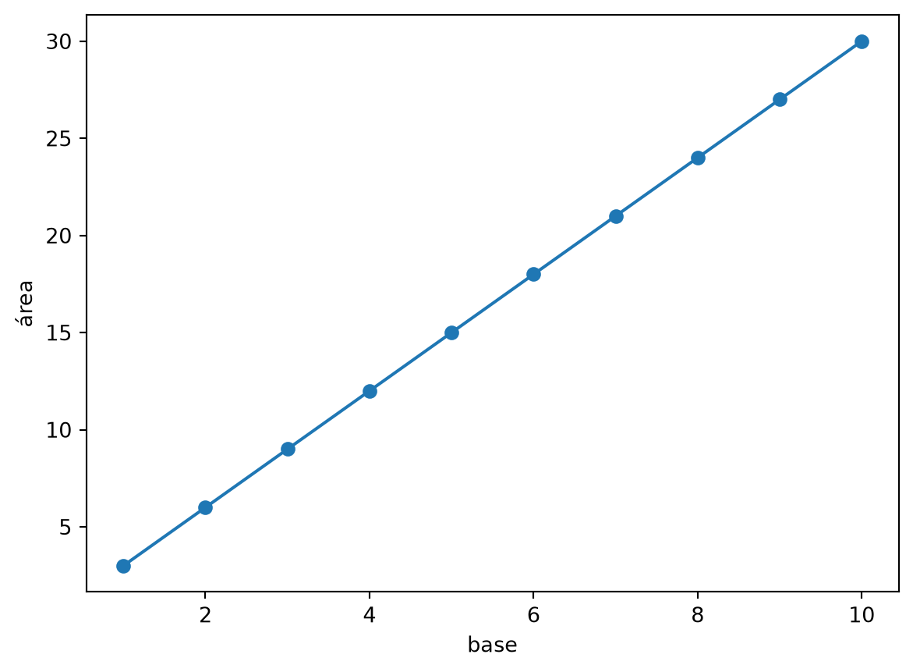
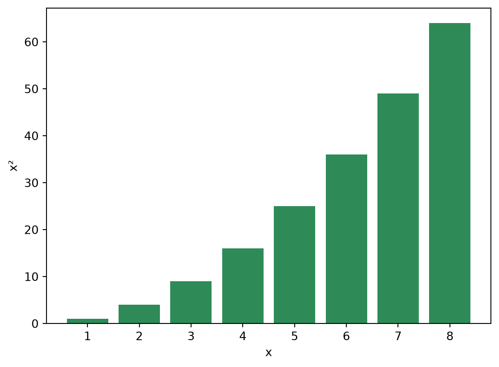

09 · De .ipynb y .py a Quarto
¿Ya tienes notebooks de Jupyter o scripts de Python? No hace falta reescribirlos. Esta página muestra varias formas de aprovecharlos con Quarto.
Archivos de práctica en la carpeta ejemplos/09_conversion/:
| Archivo | Qué es |
|---|---|
09_conversion/notebook_ejemplo.ipynb |
Notebook de Jupyter con una clase Rectangulo y una gráfica |
09_conversion/script_ejemplo.py |
Script .py en formato percent (# %%) |
09_conversion/figuras.py |
Módulo .py normal, sin celdas |
Nota
Todos los comandos de esta página se ejecutan dentro de la carpeta de práctica: cd 01_quarto/ejemplos/09_conversion
Resumen
| Tengo… | Quiero… | Comando / técnica |
|---|---|---|
.ipynb |
Convertirlo a .qmd |
quarto convert archivo.ipynb |
.qmd |
Convertirlo a .ipynb |
quarto convert archivo.qmd |
.ipynb |
Publicarlo sin convertir | quarto render archivo.ipynb |
.ipynb |
Usar sólo una gráfica o celda | {{< embed archivo.ipynb#etiqueta >}} |
.py |
Publicarlo como documento | Agregar celdas # %% y quarto render archivo.py |
.py (módulo) |
Usar sus funciones en un .qmd |
import desde una celda |
1. Convertir .ipynb → .qmd
quarto convert notebook_ejemplo.ipynb # crea notebook_ejemplo.qmd
quarto convert notebook_ejemplo.ipynb -o otro_nombre.qmdQué hace la conversión:
- Cada celda de Markdown pasa a ser texto normal.
- Cada celda de código pasa a ser un bloque
```{python}. - El primer título
# ...del notebook se convierte en eltitle:del YAML. - Las opciones
#|que tuvieras en las celdas se conservan. - Las salidas se descartan: un
.qmdsólo guarda código, y los resultados se generan al renderizar.
Resultado de convertir notebook_ejemplo.ipynb (fragmento):
---
title: Notebook de ejemplo
jupyter: python3
---
Un notebook sencillo con una clase `Rectangulo`.
::: {#20f47b60 .cell execution_count=1}
``` {.python .cell-code}
class Rectangulo:
def __init__(self, base, altura):
self.base = base
self.altura = altura
def area(self):
return self.base * self.altura
```
:::
## Crear objetos
::: {#826a4c80 .cell execution_count=2}
``` {.python .cell-code}
r = Rectangulo(4, 3)
print(f"Área: {r.area()}")
```
::: {.cell-output .cell-output-stdout}
```
Área: 12
```
:::
:::
Convertir varios notebooks a la vez
# desde la raíz del repositorio: todos los notebooks de src/
for nb in src/*.ipynb; do quarto convert "$nb"; doneY al revés: .qmd → .ipynb
quarto convert notebook_ejemplo.qmd -o copia.ipynbÚtil para abrir un .qmd en Jupyter o subirlo a Google Colab.
Tip¿Por qué convertir a
.qmd?
- Es texto plano: en
git diffse ven los cambios claramente (un.ipynbes JSON con salidas e imágenes). - Se edita cómodo en cualquier editor.
- No guarda salidas viejas: siempre se generan de nuevo al renderizar.
2. Renderizar el .ipynb directamente (sin convertir)
Quarto puede publicar el notebook tal cual:
quarto render notebook_ejemplo.ipynb # usa las salidas guardadas en el notebook
quarto render notebook_ejemplo.ipynb --execute # vuelve a ejecutar todas las celdas
quarto preview notebook_ejemplo.ipynb # vista previa en vivo
Importante
Por defecto Quarto no ejecuta los .ipynb: muestra las salidas que ya tienen guardadas. Si el notebook nunca se ejecutó (o lo modificaste), usa --execute.
Puedes agregar opciones de Quarto al notebook:
YAML: agrega como primera celda una de tipo Raw con el encabezado:
--- title: "Mi notebook" format: html ---Opciones de celda: escribe
#| echo: false,#| label: fig-..., etc. al inicio de las celdas de código, igual que en un.qmd.
3. Insertar una celda de un notebook (embed)
Si sólo te interesa una gráfica o resultado de un notebook, incrústalo en tu .qmd con el shortcode embed y la label de la celda. La celda de la gráfica en notebook_ejemplo.ipynb tiene #| label: fig-areas, así que:
{{< embed 09_conversion/notebook_ejemplo.ipynb#fig-areas >}}Resultado:
Nota
embed sólo funciona dentro de un proyecto Quarto (una carpeta con _quarto.yml), como esta carpeta 01_quarto/.
4. Renderizar un archivo .py
Quarto puede renderizar un .py si lo escribes en formato percent, el mismo que usan VS Code, Spyder y PyCharm para dividir un script en celdas:
# %% [markdown]
# ---
# title: "Script de Python renderizado con Quarto"
# format: html
# jupyter: python3
# ---
# %% [markdown]
# Texto en **Markdown**: cada línea empieza con `# `.
# %%
class Circulo:
def __init__(self, radio):
self.radio = radio
def area(self):
return 3.14159 * self.radio**2
# %%
for r in [1, 2, 3]:
print(f"Radio {r}: área = {Circulo(r).area():.2f}")# %%inicia una celda de código.# %% [markdown]inicia una celda de texto.- La primera celda Markdown puede llevar el YAML.
- Las opciones
#|funcionan igual dentro de las celdas de código.
El archivo sigue siendo Python válido:
python script_ejemplo.py # se ejecuta como script normal
quarto render script_ejemplo.py # genera script_ejemplo.html
quarto preview script_ejemplo.pyPasar un script normal a formato percent
- Al inicio, agrega una celda
# %% [markdown]con el YAML (título, formato). - Divide el código en bloques lógicos y pon
# %%antes de cada uno. - Convierte en celdas
# %% [markdown]los comentarios que expliquen algo.
¿Necesitas un .qmd o un .ipynb? Con el script ya en formato percent puedes usar Jupytext:
uv add jupytext
jupytext --to ipynb script_ejemplo.py # .py → .ipynb
quarto convert script_ejemplo.ipynb # .ipynb → .qmd5. Usar un módulo .py desde un .qmd
Si el .py es una librería de funciones o clases (sin celdas), no hace falta convertirlo: impórtalo desde una celda. El .qmd se ejecuta en su propia carpeta; si el .py está en la misma carpeta basta con import figuras. Si está en una subcarpeta, primero se agrega esa carpeta a sys.path:
from importlib import reload
import sys
sys.path.insert(0, "09_conversion") # carpeta donde está figuras.py
import figuras
reload(figuras) # toma cambios recientes del archivo al hacer preview
figuras.grafica_cuadrados(8)
Así mantienes la lógica en archivos .py (fáciles de probar y reutilizar) y en el .qmd sólo la explicación y los resultados.
TipPara el curso
Los notebooks de src/ (01_Introduccion_Clases_Objetos.ipynb, …) se pueden publicar como página web sin modificarlos: uv run quarto render src/01_Introduccion_Clases_Objetos.ipynb --execute